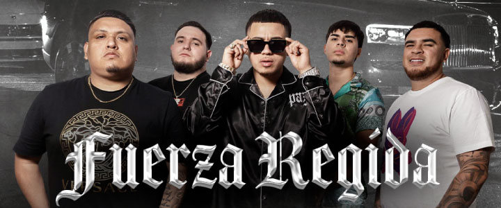

"Es Difícil Ser Un Santo"
Suena y dice más o menos
Siempre en la mente
Obtener las pacas gruesas
Pensamientos verdes
Verde quemó y la mente va a elevar
No pesamos igual
Diferente perspectiva
Ya se notó la movida, tres gallos cargo en mi cuadrilla
Es difícil ser un santo
Todos de la bola son demonios
Siendo malo me divierto
Cuatro personajes más agrego
A la lista con que me navego
La misma gente que guarda mi respeto
La raza que considero leño, con los que empecé de cero
Columpiado de una nube observo
Escucho, acciono y aprendo
De nada me arrepiento
Lo hice a mi modo y lo sostengo
Y claro esto no es un cuento
Me respaldarán los hechos
Todo es cuestión de tiempo, mi único trabajo es no rajar leño
Ya me enfoqué
Cocinando estas rolitas
Ya me miraré
Con los demás en la cima
Sé que llegaré
Hubo unos retrasos
Pero aquí andamos y les aseguro, también hay pa rato
Con el equipo me mantengo estable
La balanza está equilibrada
Estudien lo que no saben
Finta callejera, porque soy de calle
Pero responsable para el jale
En la lumbre me navego sin quemarme
Aguante lo que les arde, ajetreando sigo los dólares
Doble vaso, mugrosa la soda
Bebiendo jarabe rojo
Con tu morra un leño voy a forjar
Mientras me va dando cabeza en la troca
El vuelo se siente fenomenal
Y se va a pasar mis hijos
Silenciosa de lo sucedido y para la mañana regresa contigo
Desde el 5-30
Clicka shit

Evito las malas vibras
Es muy cierto, hay niveles en la vida
Propio panso, pero mi propia linea
No les miento la subida fue putiza
Muy contento de mi puesto, por que me consto
Es notable el movimiento ando en lo checo
Cortada para tener riesgo, para tener mando
Media gasto y a la misma vez la duplicó
Andamos en lo mismo
Y va para largo el trabajo
Por tu arreo traigo mandado
Área 5-30, radicamos, del 209
La clicona entre respaldo
Días de la ganjita gladiador
Salen semanales, nada mayor
De chavalo fue costumbre
Me gustaban los billetes, caminaba por la lumbre
Me tiraban los ladrillos
Los cholos de mi cuadrilla, me enseñaron la movida
Le pido disculpas a mi madresita
No es culpa de nadie yo escogí esta vida
Si me va bien, le va mejor a mi familia
Tatuado en la mente es pues el hecho principal
Mi consuelo es dinero
Ya lo gasto sin pensarlo los adictos quieres más pop
No fumo mango para meter lana
En vez de zapatos, pacas guardo en la caja
Ya se me esta haciendo todo esto normal
Viene un mal día, nunca me va mal
Indica activa las fibras y el jarabe las tos quita
Aunque no este enfermo ahorita
Son las cosas de la clica
No creo que lo entenderías
Tú no sabes de esta vida